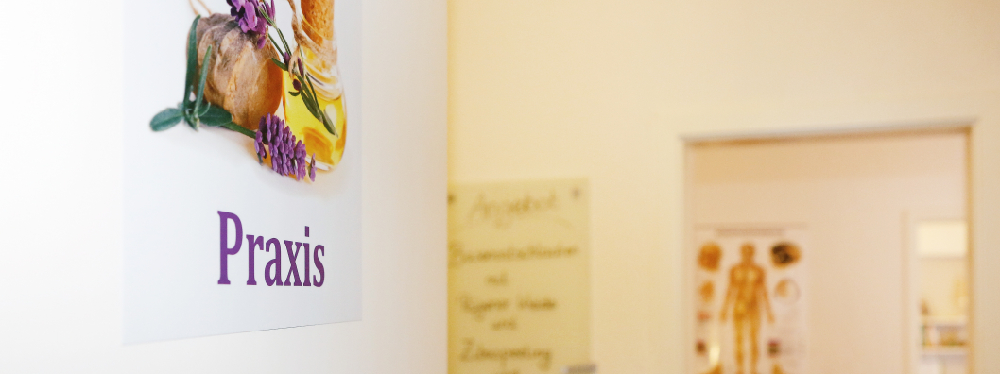
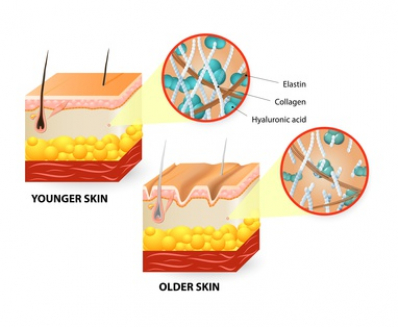

Ästhetische Medizin
Faltenreduzierende Unterspritzungen mit Hyaluron.


Ästhetische Medizin
Mit der Ästhetischen Medizin werden die Pfade der Gesundheit verlassen; hier geht es primär um Schönheit. Aber ist nicht auch die eigene Wahrnehmung und das Mit-sich-im Reinen-sein ein wichtiger Baustein unseres subjektiven Wohlgefühls? Um dieses zu unterstützen, biete ich in meiner Praxis faltenreduzierende Unterspritzungen und auffüllende Behandlungen an. Eingesetzt wird nur der körpereigene Bausteine Hyaluron.
Hyaluronsäure liegt im Körper als wichtiger Baustein des Bindegewebes vor und bindet viel Wasser. Dadurch erscheint das jugendliche Gesicht weich und gerundet, es liegt kaum Faltenbildung der straffen Haut vor. Leider verliert der Körper im Laufe des Alterungsprozesses auch die Fülle an Hyaluron - mit den unerwünschten Nebenwirkungen von hagerer werdenden, faltenreichen Gesichtern. Hier wird nun der Mangel an körpereigenem Hyaluron lediglich gezielt ausgeglichen, das behandelte Gesicht erscheint wieder frischer und jünger.
Gönnen Sie sich diesen „Urlaub“ für Ihr Wohlbefinden und vereinbaren Sie einen Termin.
Passt eine dieser Behandlungen zu Ihnen?
Das klären wir am besten im Gespräch. Der erste Termin dauert eine Stunde.
- Praxis
- Uerdingerstr. 573
47800 Krefeld - Telefon
- 0173/8626293